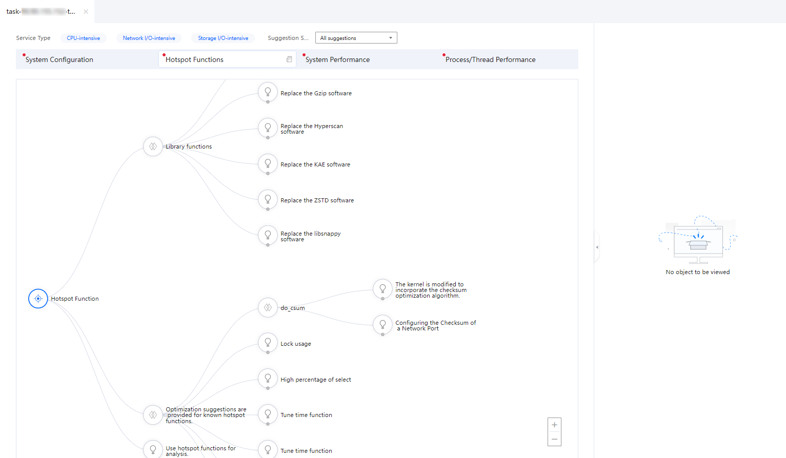
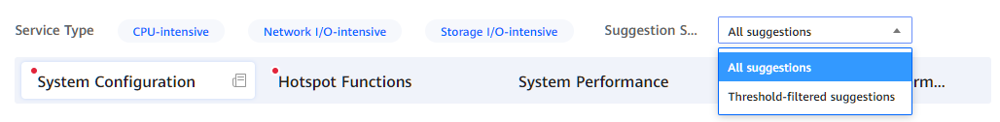
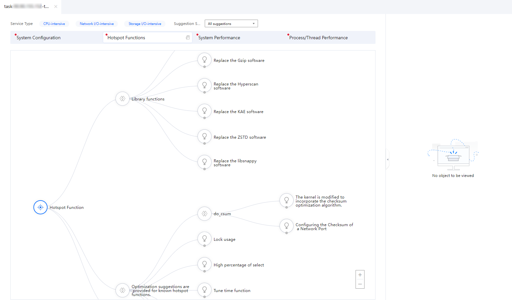
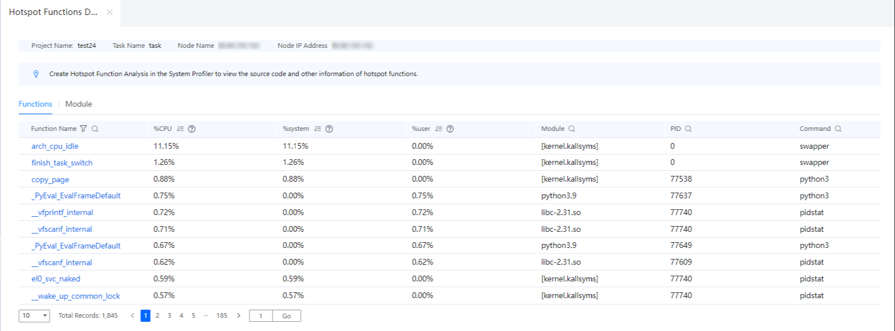

Prerequisites
An analysis task has been created and the analysis is complete.
Procedure
- In the Project Management area, click
 before the target project and analysis task.
before the target project and analysis task.The node list is displayed.
- Click the name of the target node to view the analysis result.
The analysis result page is displayed.
Figure 1 Analysis result page
 - (Optional) Select one or more service types.
- Select the service types as required. Possible options are CPU-intensive, Network I/O-intensive, or Storage I/O-intensive. You can select one to three service types. The text color of the selected options changes to blue. By default, all the three options are selected.
- Select the suggestion scope based on the actual situation. You can adjust the topology tree by selecting All suggestions or Threshold-filtered suggestions.Figure 2 Selecting a service type

- Click Hotspot Functions to view the analysis result and set tuning parameters.Figure 3 Viewing the hotspot function analysis result
- View the tuning suggestion topology tree on the analysis result page. Click
 and
and  to select the corresponding tuning suggestions based on the configuration conditions.Figure 4 Tuning suggestions
to select the corresponding tuning suggestions based on the configuration conditions.Figure 4 Tuning suggestions
- View the Relevant Configurations, Indicator Description, Optimization Suggestion, and Optimization Guide on the right. Click
 to adopt the tuning suggestion, or cancel the adoption of the tuning suggestion by clicking it again.Figure 5 Tuning suggestion page
to adopt the tuning suggestion, or cancel the adoption of the tuning suggestion by clicking it again.Figure 5 Tuning suggestion page
- The adopted tuning suggestions are saved in the associated report. Click the associated report in the lower right corner of the page to access the associated report page.
All adopted tuning suggestions are displayed on the associated report page. You can click the task name to view the details. Click Valid or Invalid in the lower left corner to check whether the tuning suggestion meets the expectation.
Figure 6 Associated report
- View the tuning suggestion topology tree on the analysis result page. Click
- Click
 on the right of Hotspot Functions to view the details.The Hotspot Functions Details page includes the Functions and Module parts. You can click a function name to view its detailed information.Figure 7 Hotspot function details
on the right of Hotspot Functions to view the details.The Hotspot Functions Details page includes the Functions and Module parts. You can click a function name to view its detailed information.Figure 7 Hotspot function details
